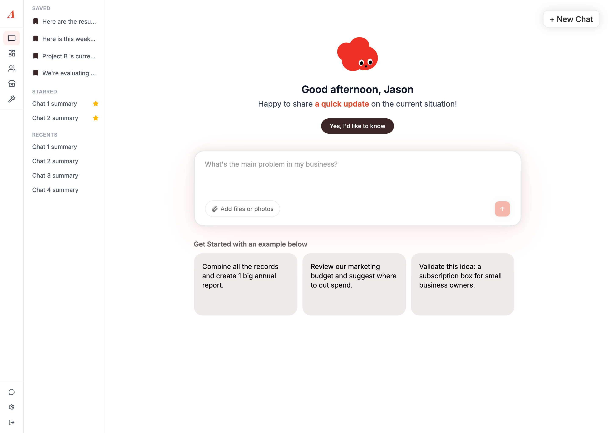
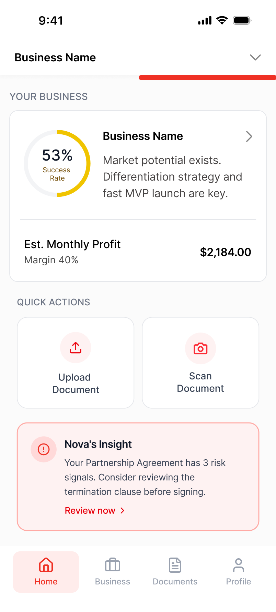
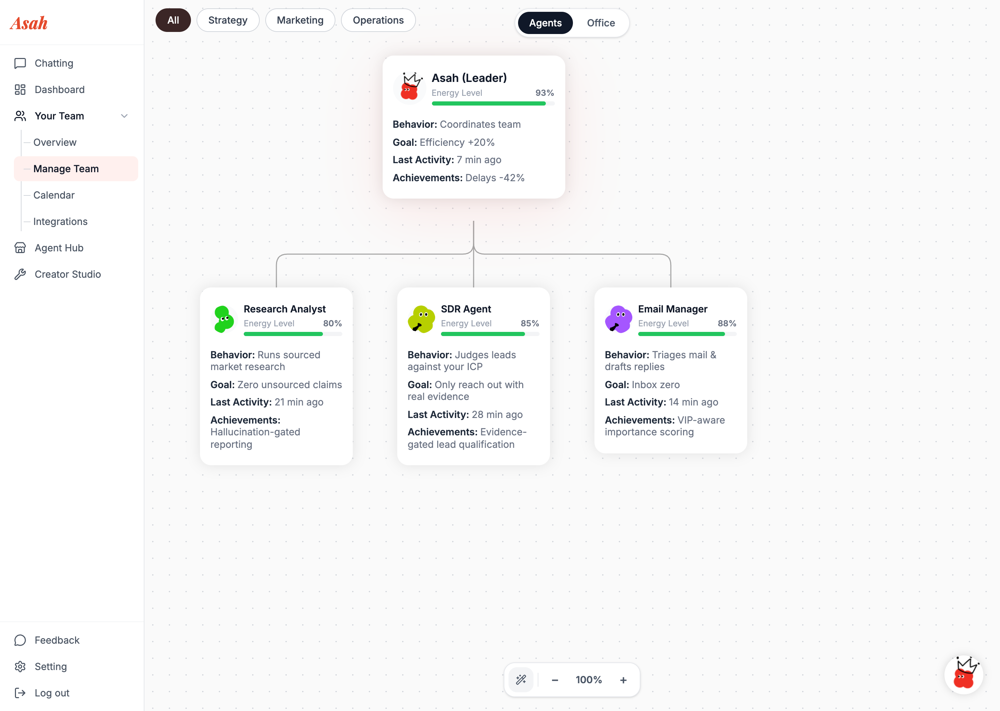
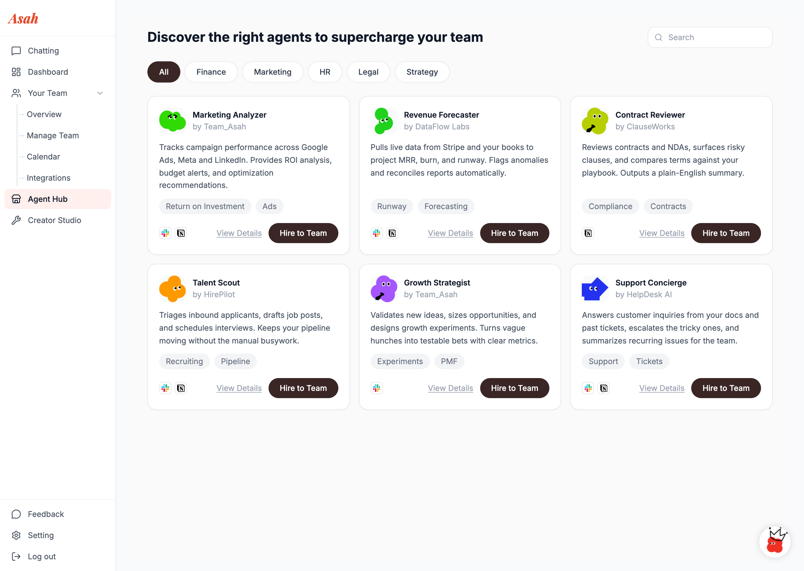
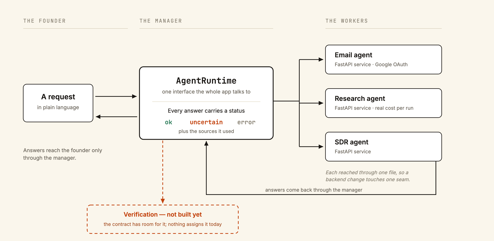
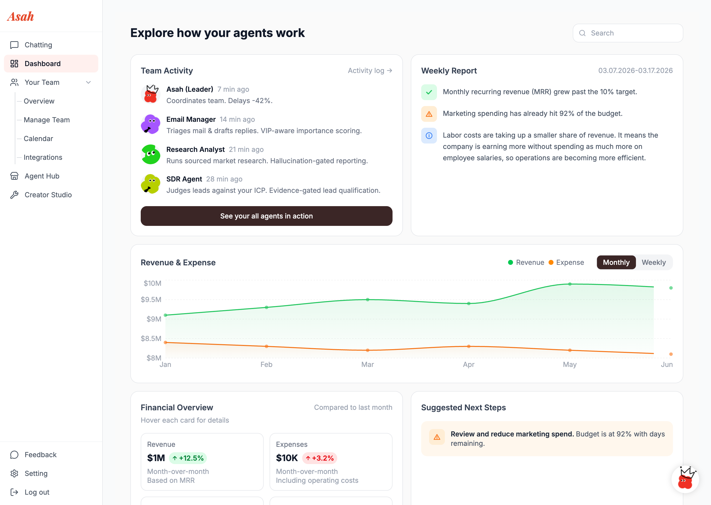
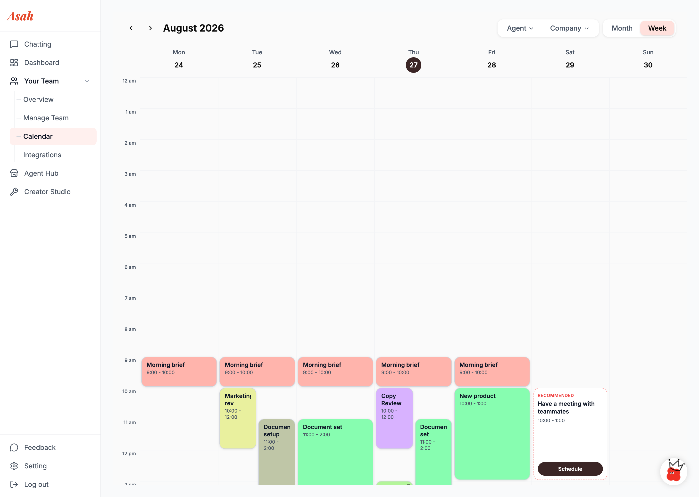
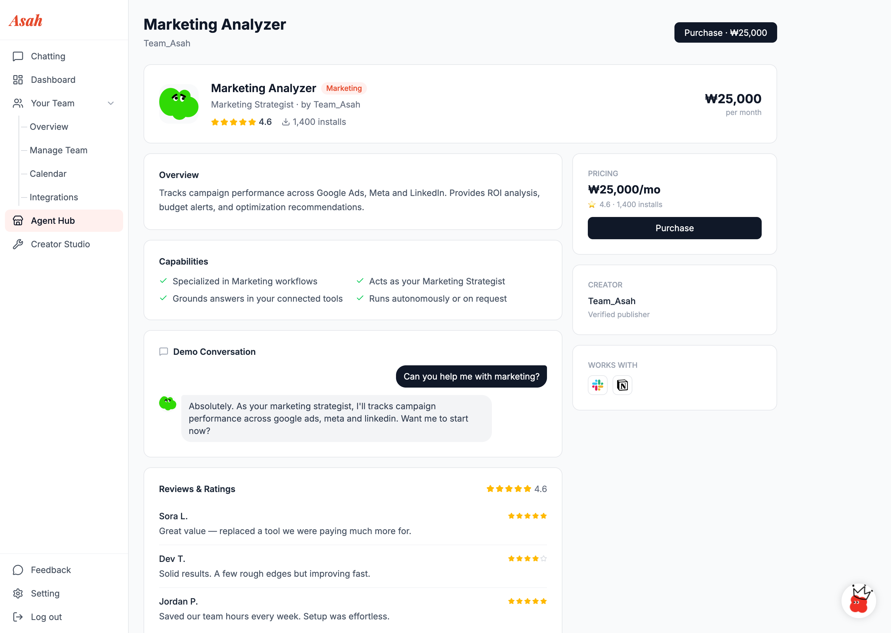
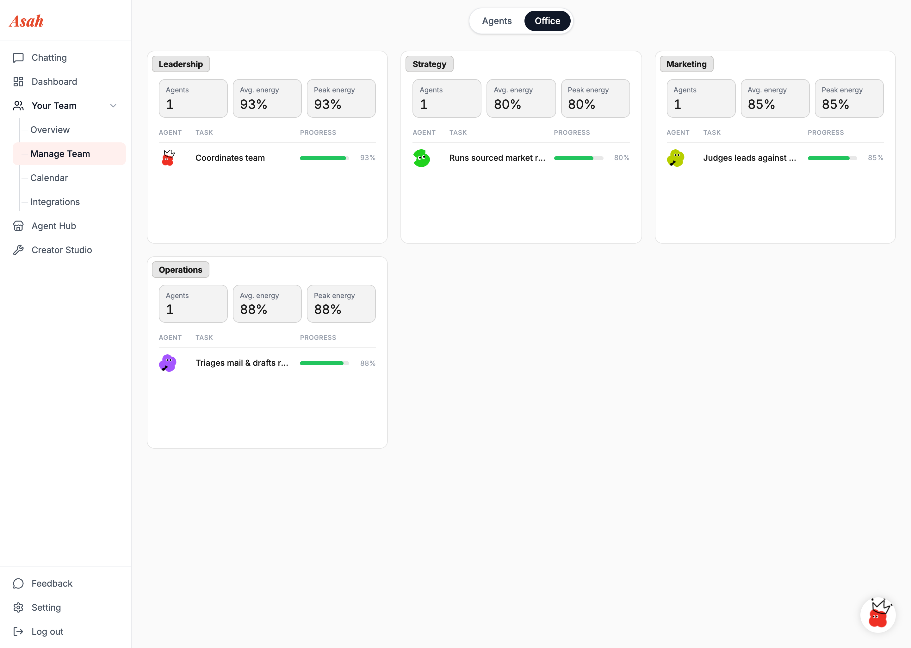

Case 01 / Web app
Asah
An AI business manager for founders who'd rather build than manage.

— The problem
Solo founders and small startup teams carry the entire business on their shoulders — operations, planning, admin — usually with no business-management expertise on the team.
— The outcome
Asah, an AI business manager that takes the business side off the founder's plate. Users hire specialized AI agents like employees, and Asah supervises and coordinates them — no babysitting, no code.
Context & problem
Most startups begin as a single good idea. The founder is usually a designer, an engineer, or a domain expert — rarely a business operator. Yet the moment the idea becomes a company, the business side arrives all at once: operations, scheduling, planning, coordination, admin. It's work that has to happen, and it quietly eats the hours that should go into the product itself.
There are AI tools that promise to help. But they tend to be fragmented — a different tool for every task — and most assume the user is already comfortable with AI agents, prompts, and configuration. For a founder who just wants their business to run, that's one more thing to learn, not a thing that helps.
Asah started as a project for the Amazon Nova Hackathon, built for first-time founders: it scored a business idea for viability, scanned uploaded contracts and legal documents for risk, and laid out a roadmap of what to do next. It didn't win. We rebuilt it anyway — into something with a different shape, for a different user. That rebuild is Decision 01.
Who it's for: solo founders and small startup teams who don't have business expertise on the team — and who aren't familiar with AI agents either.
Constraints: a hackathon timeline to start, a team of three, and a build on Amazon Nova.
Three terms, if this space is new to you: an AI agent is software that can plan and carry out multi-step actions on its own, not just answer a single question. RAG (retrieval-augmented generation) is how a model pulls in real, specific information — in Asah's case, a business's own data — before it answers, instead of relying only on what it learned during training. Amazon Nova is Amazon's family of foundation models, the base Asah's agents run on.
My role
Team of three. Design and research were shared — all three of us shaped the concept, the users, and the direction together.
The backend and knowledge layer were also team work — I built it alongside a teammate, leaning on AI-assisted coding for both of us, and at this distance I can't cleanly separate which lines were whose. What I can speak to is the thinking: what the agent contract had to guarantee — an honest uncertain instead of a confident guess — and why the knowledge layer needed to ground an agent in the specific company it's working for rather than answering in generalities.
One piece I can point to as mine end to end: wiring the app to AWS and getting the backend actually connected — the last mile where an agent went from working in isolation to responding live, in the running app.
On the design side, one rule shaped every decision I pushed back on. Trust was the floor — a business manager that looks childish loses it the moment a founder considers handing over real work. But what I was pushing for was ease: someone who has never touched an AI agent should be able to start without learning a system first. Trust set the limit; lowering the barrier was the goal.
Research
We didn't have time for primary research with founders, so we ran a focused secondary-research pass to map the problem space and the competitive landscape before committing to a direction. We looked at what running a startup actually requires, where founders consistently struggle, why startups fail, and what tools already exist for small teams.
Four findings shaped the design:
- Startups fail at a punishing rate, and rarely because the idea was bad. About one in five new businesses don't survive their first year, and roughly half are gone within five. When we looked at why, operations, money, and team management showed up far more often than a weak product. → That confirmed our focus: take the business side off the founder, not the product side. Source: U.S. Bureau of Labor Statistics, Business Employment Dynamics.
- The founders who struggle most don't have a business operator on the team. Many small startups are technical or design-led, and the business workload lands on whoever has time. → That sharpened our audience: solo founders and small teams without that expertise.
- The tools that exist are either fragmented or too technical. Founders reach for ChatGPT and Claude for general questions, Stripe Atlas and LegalZoom for company formation, Docusign AI and Ironclad for contract review. Each does one slice well; none carries a founder end to end, and most still assume fluency in agents, prompts, and configuration. → That set the differentiation: not another tool to learn, but a single manager that handles the agents on the user's behalf.
- Founders don't know what to do once they've actually launched. Idea-stage guidance is everywhere; after launch it dries up. → This is the finding that outlasted the pivot itself — see Decision 02.
Goal
With no shipped product and no users, the only test available was one the concept had to pass on its own: could someone who has never touched an AI agent hire one, trust it, and rely on it — without opening a configuration screen or writing a line of code? Every decision below was run against that question.
[Kelly: once there's real usage, replace this with an actual measurable bar — activation rate, retention, something a number can hit.]
Decisions & tradeoffs
From hackathon app to web product, with a sharper direction
The version we submitted to the hackathon was a mobile app. After submitting, we asked whether it would survive as a real product. The answer was no — our audience wasn't specific enough, and the product didn't feel different enough from the AI tools already out there.
So we redrew it. Instead of "an app with AI features," Asah became an AI business manager — positioned like a real employee, not a tool. The user hires other AI agents as workers, and Asah supervises all of them, so the user never has to. That gave us a clear audience and a clear difference at once. We also moved to web-first: the work Asah handles fits a larger screen better than a phone. (A mobile version is still planned — but web is the home.)
The tradeoff: we walked away from a finished hackathon app and committed to a much larger build. We decided a clear, defensible product was worth more than a head start.

The roadmap became a behavior, not a screen
The hackathon version had an explicit roadmap: a checklist a founder could see and step through — idea validation, business planning, legal setup, MVP development, launch. It came from a real gap. Idea-stage guidance is everywhere; once a business is actually running, it dries up.
That screen didn't survive the pivot, but the instinct behind it did. Instead of one fixed checklist every founder walks through the same way, the job moved into the manager itself. By default, Asah runs the business side on its own — analyzing revenue and the rest of the operating data without being asked. And when a founder hands it a goal, Asah plans toward that goal and assigns the work across its other agents, tailored to where that specific business is rather than rendered the same way for everyone.
The tradeoff: a checklist is scannable at a glance in a way a conversation isn't. We decided personalized was worth more than skimmable.
A manager you don't have to manage
The hardest part of "just use AI agents" is usually the user. Agents are powerful, but configuring them, prompting them, and keeping track of them is its own skill — and our users, by definition, don't have it.
So we made supervision Asah's job, not the user's. The user hires agents; Asah monitors and coordinates them. Someone who has never touched an AI agent should be able to put quality agents to work without seeing a single line of configuration or code.

Agents as characters
Described accurately, an AI agent is a prompt, a tool list, and a configuration. Most of our users wouldn't know what to do with that. They aren't AI users. They're founders.
So we treated each agent as a character: a name, a role, a personality, traits you can read at a glance. What's under the hood is still an AI agent; what the user sees is closer to a teammate they can size up in two seconds. For a product whose whole pitch is "you don't need to be technical to use this," that mattered more than realism.

How it works
The beginner-friendly surface above only works if something underneath absorbs the complexity it's hiding. This is that half — the current web build, not the version we submitted to the hackathon.
One contract, swappable engines. The app doesn't talk to agents directly. It talks to a single interface, AgentRuntime: send a request, get back an output with a status of ok, uncertain, or error, plus the sources the agent found its answer from. Whichever real backend is answering gets swapped in behind that one interface. Until an engine is plugged in, the default implementation returns an error instead of a made-up answer — the "don't guess" rule from 02 isn't house style here, it's the type the code compiles against. Requests are cancelable mid-flight, because a research report costs real money per run and can take minutes to come back.

Real backends, not mocks, for three agents. An Email agent (behind Google OAuth), a Research agent, and an SDR agent each run as their own Python (FastAPI) service, reached through one file that owns every request and response mapping for that agent — so a backend change touches one seam, not the app. Getting an agent that far — a working auth flow, a real HTTP contract, a UI that survives a slow or failed response instead of hanging — turned out to be most of the actual engineering.
Supervision, made visible. A running activity log records only real agent executions, never the seed agents, each with a one-line result and a link back to where it happened.
RAG — where it stands, honestly. The knowledge layer is being rebuilt right now — Postgres with pgvector, documents chunked and embedded, retrieved before an agent answers — and it isn't finished. The hackathon version had a working version of exactly this for a different job: scanning uploaded contracts for risk, with a jurisdiction-rules fallback so an empty search still returned something grounded. That's the bar the rebuild is aimed at, not a hypothetical.
What isn't built yet. The verification loop that "Asah supervises agents" implies — one agent's output getting checked before a user sees it. The contract has room for it (that's what the uncertain status is for), but nothing assigns it automatically today. That gap is real, and it's what Reflection points at under "what's next."
Stack: Vite + React + TypeScript on the frontend; Python (FastAPI) for the agent backends; storage moving from local-only to Supabase (Postgres with row-level security, plus pgvector for the RAG rebuild above).
The design
The rest of the product

01
Dashboard
The activity feed only lists runs that actually happened, and the weekly report is written as sentences rather than metrics — the manager reporting back, in the register a person would use.

02
Calendar
The dashed card on the right is the part that matters: Asah proposing a meeting nobody asked it for. Decision 02 says planning became a behavior — this is where that behavior surfaces.

03
Agent listing
Go one level deeper than the hiring grid and it turns into a purchase decision — price, rating, reviews, a sample conversation. Borrowing the app-store pattern meant we didn't have to teach it.
Outcome
The hackathon didn't end in a prize. The signal that mattered came from the design itself: the beginner-friendly UI — the part we'd been least sure about — turned out to be the part that kept working. It's what told us Asah was worth continuing past the hackathon, and it's the thread the current web version is built around.
Asah isn't finished yet, so we haven't put it in front of users formally. But friends we showed it to came back with the same things unprompted: it's well built, the idea is good, it's beginner-friendly. One piece of that feedback went further than we expected: because you hire agents instead of configuring features, the same product works for businesses in completely different fields — each one assembling the team it actually needs. That was the point of building hiring as the model, and nobody had to explain it for it to land.
[Kelly: showing it to 3-5 real founders and writing down one thing that changed because of it is still the single strongest thing you could add to this section.]
Reflection
Why this problem. A friend of mine wanted to start a business. What stopped them wasn't the idea — it was everything around it: realizing that having a company means running one, and that the running doesn't stop. They gave it up. What stayed with me was the loss in that, and how ordinary it is. Asah is aimed at the wall they hit. [Kelly: this is your friend's story, so check the wording — I wrote it from what you told me and kept it short on purpose. Change anything that isn't right.]
What went well. The pivot. Being willing to say "the audience isn't clear enough, and we don't look different enough" about our own finished submission is the decision the rest of the project rests on.
What was hardest. Connecting the backend to the frontend. This was my first time doing backend at all — API keys, wiring the app to AWS, getting Amazon Nova to return the right kind of response were all new, and the seams between systems were where the hard parts lived. The knowledge layer was shared work with a teammate, built with AI assistance on both sides; the end-to-end connection is the piece I can point to as mine. I leaned on AI-assisted coding heavily, but the design of what to ask for, and the responsibility for whether the answer was right, was mine.
What I'd do differently. The Office — where the user sees their hired agents — works, but it could feel more like an actual 2D office. I'd push the characters further: have them visibly doing the work, not just standing there. The metaphor we chose was the right one; I'd just commit to it harder.

What's next. Finishing the backend so Asah works end to end, not just on the design side. The web version is the home; the mobile version comes after.